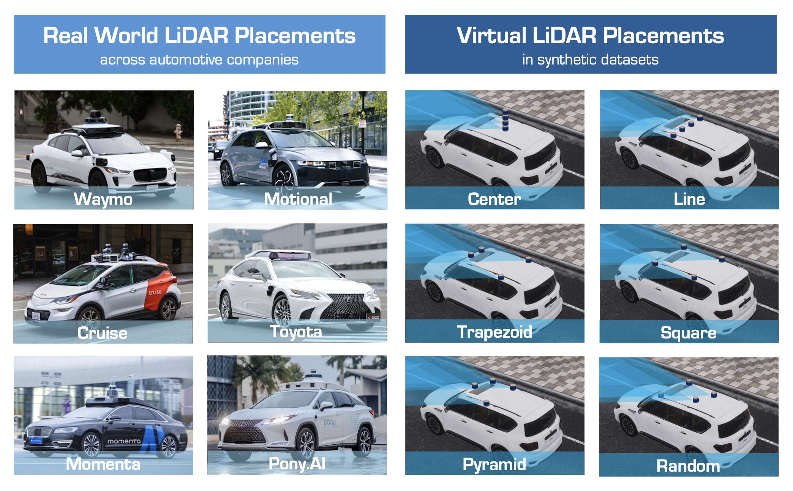

👋 Welcome to Track #3: Cross-Sensor Placement 3D Object Detection of the 2025 RoboSense Challenge!
Autonomous driving models typically rely on well-calibrated sensor setups, and even slight deviations in sensor placements across different vehicles or platforms can significantly degrade performance. This lack of robustness to sensor variability makes it challenging to transfer perception models between different vehicle platforms without extensive retraining or manual adjustment. Thus, achieving generalization across sensor placements is essential for the practical deployment of driving perception models.
🏆 Prize Pool: $2,000 USD (1st: $1,000, 2nd: $600, 3rd: $400) + Innovation Awards

This track evaluates the capability of generalizing perception models across sensor placements. Participants are expected to develop models that, when trained on fixed sensor placements, can generalize to diverse configurations with minimal performance degradation.
Duration: 15 June 2025 – 15 August 2025
In this phase, participants are provided with the training and validation datasets which include diverse LiDAR placements. Ground truth annotations are made available to support method development and performance validation. Participants are expected to use these datasets to design, train, and refine their models.
Duration: 15 August 2025 – 15 October 2025
In the second phase, participants will have access to a test dataset with LiDAR placements different from those in the training and validation sets. Ground truth annotations are not provided. They are required to run their developed models on the test set and submit the results in the json format. Model performance will be evaluated based on the submitted outputs.
This track uses datasets collected in the CARLA simulator and formatted according to the nuScenes data structure.
Please download the provided development kit to process the datasets.
This kit is based on the nuscenes-devkit but has been customized for this track.
It can be used in the same way as the official nuScenes dataset.
Do not install the official nuscenes-devkit, as it may not be fully compatible with the datasets used in this track.
In this track, BEVFusion-L is used as the baseline method. Participants may choose to build upon it or develop their own approaches independently. Detailed environment setup and experimental protocols can be found in the Track3 GitHub repository.
In this track, we use ...
| Metric | Metric 1 | Metric 2 | Metric 3 | Metric 4 |
|---|---|---|---|---|
| Baseline Model | x.xx | x.xx | x.xx | x.xx |
We provide the following resources to support the development of models in this track:
| Resource | Link | |
|---|---|---|
| GitHub | https://github.com/robosense2025/track3 | |
| Checkpoint | ||
| Registration | Google Form | |
| Evaluation Server | Codabench |